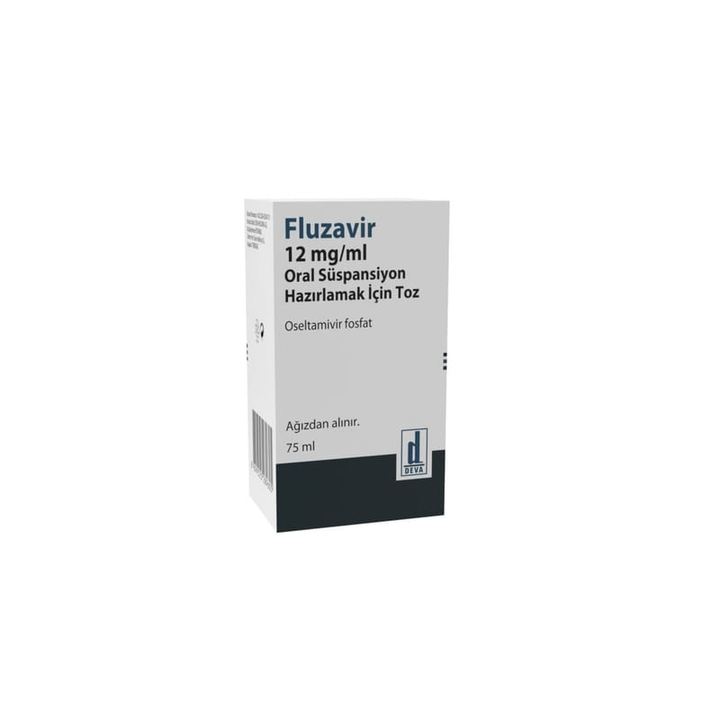

Fluzavir 12 mg/ml Oral Süspansiyon Hazırlamak İçin Toz, 75 ML

Ne için kullanılır
KT · Bölüm 1FLUZAVİR, 2 haftadan büyük olan çocuk ve yetişkinlerde influenza enfeksiyonunun tedavisinde semptomların başlangıcından sonra 2 günden daha uzun süre geçmediğinde (influenza enfeksiyonu için artmış riski olanlarda semptom süresi daha uzun olabilir) ve 1 yaş ve üzerinde influenza profilaksisinde kullanılır.
Semptomların başlamasından sonra 48 saatten daha uzun süre geçtiğinde ilacın etkinliği gösterilmemiştir.
FLUZAVİR’in etkin maddesi oseltamivir’dir.
FLUZAVİR “nöraminidaz inhibitörleri” denen bir ilaç grubuna dahildir. Bu ilaçlar grip virüsünün vücudun içinde yayılmasını engeller. Bu ilaçlar, grip virüsü enfeksiyonu belirtilerini dindirir veya engeller.
FLUZAVİR, erken doğan (prematüre) ve 2 haftalıktan küçük bebeklerde kullanılmamalıdır.
FLUZAVİR 12 mg/ml oral süspansiyon hazırlamak için toz, beyaz kapak ile kapatılmış 125 mL’lik bal rengi cam şişe ve yanında 5 mL’lik PP şırınga ile kullanıma sunulmuştur. Sulandırma öncesi toz ve hazırlanan süspansiyon beyaz veya beyazımsı renklidir.
Oral süspansiyonu hazırlamak, doğru dozu ölçmek ve almak için lütfen "FLUZAVİR Nasıl Kullanılır?" başlığını okuyunuz.
FLUZAVİR size gribi (influenza) tedavi etmek amacıyla reçete edilmiştir. Grip belirtileri gösterdiğinizde ve grip virüsünün toplumda dolaştığı bilindiğinde kullanılabilir. Diğer zamanlarda aşağıda listelenen şekilde kullanılabilir: FLUZAVİR gribi önlemek amacıyla reçete edilir. Grip olan biriyle temasta bulunduysanız FLUZAVİR kullanılabilir. Bu kullanım için genellikle duruma göre karar verilir. FLUZAVİR, istisnai durumlarda önleyici tedavi olarak reçete edilir. Örneğin, mevsimsel grip aşısı yeterli korumayı sağlamadığında ve grip salgını (küresel grip salgını) varsa FLUZAVİR kullanılabilir.
FLUZAVİR, grip salgını sırasında, 1 yaşından küçük bebeklerde gribi tedavi etmek veya önlemek amacıyla sadece geçici süreyle, bir doktor önerisi veya bir doktorun gözetiminde kullanılır. Doktorlar, bebeğin bu ilaçtan uygun fayda sağladığından emin olmak için, bu yaştaki bebeklerde FLUZAVİR’i kullanıp kullanmamak konusunda, grip virüsünün sebep olduğu hastalığın şiddeti ve bebeğin sağlık durumuna dayanarak karar vermelidir.
Grip, virüsün neden olduğu bir enfeksiyondur. Gribin belirtileri sıklıkla ateşin ani yükselmesi (>37.8 o C), öksürük, burun akıntısı veya tıkanıklığı, baş ağrısı, kas ağrıları ve aşırı bitkinliktir. Bu belirtiler aynı zamanda diğer hastalıklar nedeniyle de oluşabilir. Gerçek grip enfeksiyonları yalnızca toplumda grip virüslerinin dolaştığı yıllık salgın dönemlerinde ortaya çıkar. Bu salgın dönemi dışında, grip benzeri belirtiler, genellikle başka enfeksiyonlar veya hastalıklar nedeniyle oluşur.